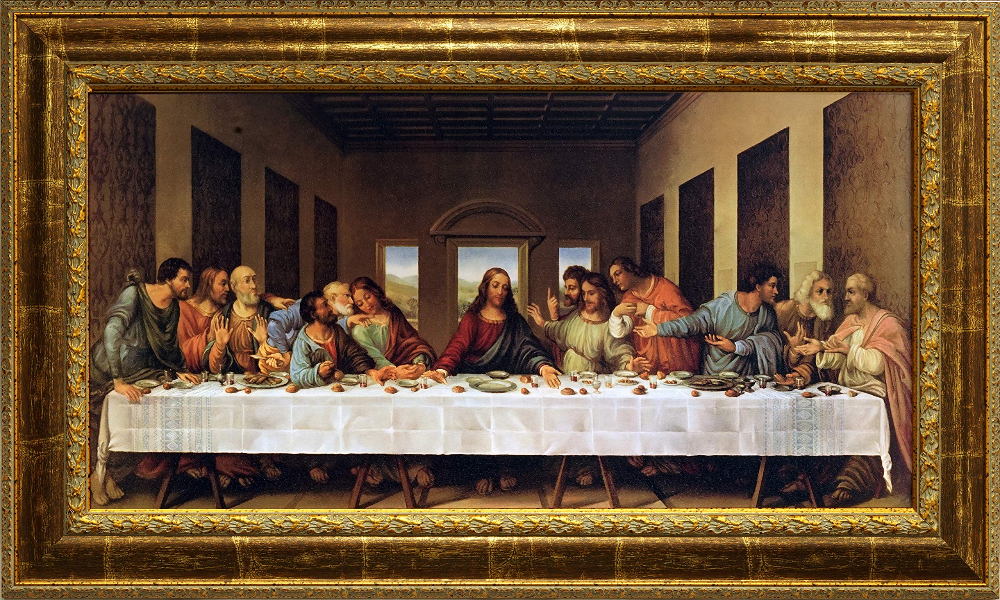

Thông tin tác phẩm
- Họa sĩ Leonardo da Vinci
- Hoàn thành 1498
- Trường phái Phục hưng
- Chất liệu Tempera trên tường thạch cao
- Quốc gia Ý

“Một khoảnh khắc im lặng trước sự phản bội,
nơi cảm xúc con người được giữ lại vĩnh viễn.”
Trong “The Last Supper”,
Leonardo da Vinci khắc họa khoảnh khắc
Chúa Jesus nói với các tông đồ rằng
một người trong số họ sẽ phản bội mình.
Chính câu nói ấy
khiến toàn bộ không gian như chững lại,
trước khi bùng nổ thành hàng loạt cảm xúc khác nhau.
Mỗi tông đồ mang một phản ứng riêng:
người kinh ngạc,
người hoài nghi,
người tức giận,
người cúi lặng trong sợ hãi.
Những cử chỉ tay,
ánh mắt và chuyển động cơ thể
liên kết với nhau
tạo nên cảm giác sống động như một sân khấu kịch.
Ở trung tâm bức tranh,
Chúa Jesus vẫn ngồi yên lặng,
trở thành điểm cân bằng giữa hỗn loạn cảm xúc xung quanh.
Leonardo sử dụng phối cảnh tuyến tính
để mọi đường nhìn đều hướng về nhân vật này,
khiến khoảnh khắc ấy
vừa thiêng liêng,
vừa đầy tính con người.
Chính sự kết hợp giữa bố cục hoàn hảo
và chiều sâu tâm lý
đã biến “The Last Supper”
thành một trong những hình ảnh nổi tiếng nhất
lịch sử hội họa phương Tây.